AnnData object with n_obs × n_vars = 100 × 2000
layers: None (.X)Single-cell RNA-seq analysis
Lviv University
History
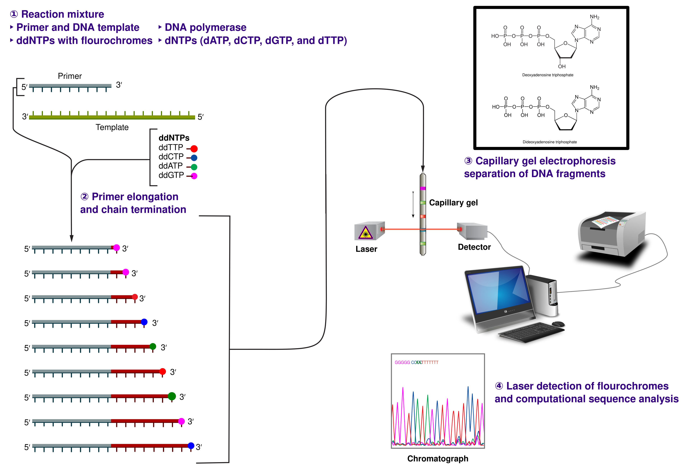
| Name | Max read length (kb) | Accuracy (%) | Cost ($/Gb) | Throughput (Mb/year) | Generation |
|---|---|---|---|---|---|
| Illumina NextSeq 550 | 0.15 | >99.9 | >47,782 | 50-63 | 2 |
| Illumina NovaSeq 6000 | 0.25 | >99.9 | 10-35 | >1,194,545 | 2 |
| Sanger sequencing (e.g. ThermoFisher) | 1 | 99.99 | 500,000 | 0.73 | 1 |
| PacBio (Sequel II, HiFi) | >20 | >99 | 43–86 | 10,220 | 3 |
| PacBio (Sequel II, CLR) | >200 | 87–92 | 13-26 | 93,440 | 3 |
| Nanopore (PromethION) | >1,000 | 87–98 | 21-42 | 3,153,600 | 3 |
| Nanopore (MinION/GridION) | >1,500 | 87–98 | 50-2,000 | 913-109,500 | 3 |
DNA-Seq Procedure
Sample and library preparation: a so-called library is prepared by fragmenting the DNA samples and ligating them with adapter molecules. These adapters participate in the hybridization of the library fragments to the matrix and form a priming site.
Amplification and sequencing: the library gets converted into single-strand molecules. During an amplification step (such as a polymerase chain reaction), clusters of DNA molecules are created. All of the clusters perform individual reactions during a single sequencing run.
Data output and analysis: The output of a sequencing experiment depends on the sequencing technology and chemistry. Some sequencers generate fluorescence signals, others may generate electric signals.
RNA-Seq Procedure
Same as DNA-seq, with the addition:
The problem
Bulk RNA-seq measures the average expression over millions of cells.
The idea
Profile the transcriptome of individual cells - typically \(10^2-10^5\) cells per experiment.
Output: a count matrix - genes \(\times\) cells, entry = number of UMI-tagged transcripts of gene \(g\) in cell \(c\).
This turns biology into a data-science problem: ~20 000 features (genes) per sample (cell), thousands of samples.
What’s UMI?
UMI \(\equiv\) Unique Molecular Identifier
Applications
Why it is hard
Pipeline
AnnData’s X
Description
X: main matrix with dimensions of obs_names x var_namesobs (=observations) correspond to the cells’ barcodesvar (=variables) correspond to the gene identifiersX is surrounded by Pandas DataFrames obs and var, which save annotations of cells and genes, respectivelyobsm and varm: whole matrices of calculations for the observations and variables respectivelyobsp and varp: graph-like structures that associate cells with cells or genes with genesuns: other unstructured data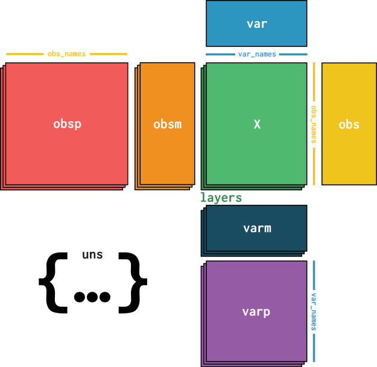
X field
<Compressed Sparse Row sparse matrix of dtype 'float32'
with 126595 stored elements and shape (100, 2000)>Add metadata
| cell_type | |
|---|---|
| Cell_0 | Monocyte |
| Cell_1 | T |
| Cell_2 | Monocyte |
| Cell_3 | Monocyte |
| Cell_4 | B |
| ... | ... |
| Cell_95 | T |
| Cell_96 | Monocyte |
| Cell_97 | B |
| Cell_98 | T |
| Cell_99 | T |
100 rows × 1 columns
Examine again:
Observation/variable-level matrices
AxisArrays with keys: 'X_umap'Examine:
Layers
We may have different forms of our original core data, perhaps one that is normalized and one that is not. These can be stored in different layers in AnnData.
Convert to Pandas DataFrame
| Gene_0 | Gene_1 | Gene_2 | Gene_3 | Gene_4 | ... | Gene_1995 | Gene_1996 | Gene_1997 | Gene_1998 | Gene_1999 | |
|---|---|---|---|---|---|---|---|---|---|---|---|
| Cell_0 | 0.000000 | 0.000000 | 0.693147 | 1.386294 | 1.098612 | ... | 0.693147 | 0.693147 | 0.693147 | 0.000000 | 0.693147 |
| Cell_1 | 1.386294 | 0.693147 | 0.693147 | 0.000000 | 0.000000 | ... | 1.098612 | 0.693147 | 0.000000 | 0.693147 | 0.693147 |
| Cell_2 | 1.098612 | 0.693147 | 0.000000 | 1.098612 | 1.386294 | ... | 0.693147 | 0.693147 | 1.386294 | 1.098612 | 0.000000 |
| Cell_3 | 0.000000 | 1.098612 | 1.098612 | 0.000000 | 0.693147 | ... | 1.386294 | 1.098612 | 1.098612 | 1.386294 | 0.000000 |
| Cell_4 | 0.693147 | 0.693147 | 0.000000 | 0.693147 | 0.693147 | ... | 0.000000 | 0.693147 | 0.693147 | 0.000000 | 0.693147 |
| ... | ... | ... | ... | ... | ... | ... | ... | ... | ... | ... | ... |
| Cell_95 | 0.000000 | 0.000000 | 0.000000 | 1.386294 | 1.386294 | ... | 0.693147 | 0.000000 | 1.098612 | 1.386294 | 1.098612 |
| Cell_96 | 1.098612 | 0.000000 | 1.609438 | 0.000000 | 1.098612 | ... | 0.000000 | 0.000000 | 0.000000 | 1.098612 | 0.693147 |
| Cell_97 | 0.693147 | 0.000000 | 1.098612 | 0.693147 | 0.693147 | ... | 0.693147 | 0.693147 | 0.693147 | 0.000000 | 0.000000 |
| Cell_98 | 0.693147 | 0.000000 | 1.098612 | 0.693147 | 1.098612 | ... | 0.000000 | 0.000000 | 0.000000 | 0.693147 | 1.098612 |
| Cell_99 | 1.098612 | 0.000000 | 0.000000 | 0.000000 | 0.000000 | ... | 0.000000 | 0.693147 | 0.000000 | 1.098612 | 0.000000 |
100 rows × 2000 columns
Another metadata example
Imagine that the observations come from instruments characterizing 10 readouts in a multi-year study with samples taken from different subjects at different sites. We would typically get that information in some format and then store it in a DataFrame:
obs_meta = pd.DataFrame(
{
"time_yr": np.random.default_rng().choice([0, 2, 4, 8], adata.n_obs),
"subject_id": np.random.default_rng().choice(
["subject 1", "subject 2", "subject 4", "subject 8"], adata.n_obs
),
"instrument_type": np.random.default_rng().choice(
["type a", "type b"], adata.n_obs
),
"site": np.random.default_rng().choice(["site x", "site y"], adata.n_obs),
},
index=adata.obs.index, # these are the same IDs of observations as above!
)Check:
Partial reading of large data
If a single h5ad file is very large, you can partially read it into memory by using backed mode.
If you do this, you will need to remember that the AnnData object has an open connection to the file used for reading.
As we are using it in read-only mode, we cannot damage anything. To proceed with this tutorial, we still need to explicitly close it.
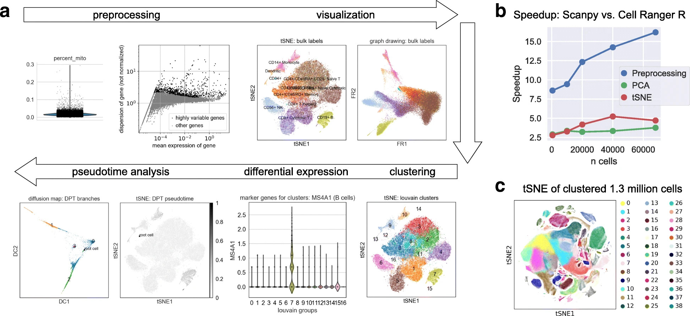
Structure
Link: https://scanpy.scverse.org/en/stable/
scanpy.preprocessing all preprocessing functions (abbreviation: scanpy.pp)scanpy.tools: all transformations of a data matrix that are not preprocessing (abbreviation: scanpy.tl)scanpy.plot: all visualizations (abbreviation: scanpy.pl)scanpy.datasets: module for datasetsAPI
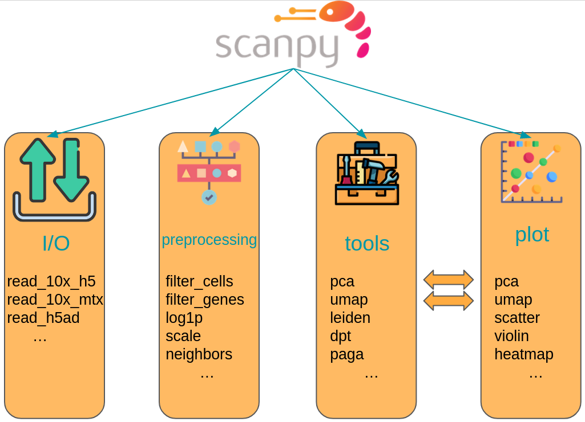
The dataset we will use
10x Genomics PBMC 3k (peripheral blood mononuclear cells, healthy donor) — the “hello world” of scRNA-seq; publicly downloadable.
Link: https://cf.10xgenomics.com/samples/cell/pbmc3k/pbmc3k_filtered_gene_bc_matrices.tar.gz
import scanpy as sc
sc.settings.verbosity = 1
# download once from 10x, then load the filtered matrix:
# https://cf.10xgenomics.com/samples/cell-exp/1.2.0/pbmc_3k/pbmc_3k_filtered_gene_bc_matrices.tar.gz
adata = sc.read_10x_mtx(
"../_data/filtered_gene_bc_matrices/hg19/",
var_names="gene_symbols",
cache=True,
compressed=False,
)
adata.var_names_make_unique()
print(adata)AnnData object with n_obs × n_vars = 2700 × 32738
var: 'gene_ids'
layers: None (.X)(If offline: sc.datasets.pbmc3k() ships a preprocessed version with scanpy.)
Dimensions and content
Dimensions:
Gene names:
| gene_ids | |
|---|---|
| MIR1302-10 | ENSG00000243485 |
| FAM138A | ENSG00000237613 |
| OR4F5 | ENSG00000186092 |
| RP11-34P13.7 | ENSG00000238009 |
| RP11-34P13.8 | ENSG00000239945 |
| ... | ... |
| AC145205.1 | ENSG00000215635 |
| BAGE5 | ENSG00000268590 |
| CU459201.1 | ENSG00000251180 |
| AC002321.2 | ENSG00000215616 |
| AC002321.1 | ENSG00000215611 |
32738 rows × 1 columns
Names:
genes: ['MIR1302-10', 'FAM138A', 'OR4F5', 'RP11-34P13.7', 'RP11-34P13.8', 'AL627309.1', 'RP11-34P13.14', 'RP11-34P13.9', 'AP006222.2', 'RP4-669L17.10']
cells: ['AAACATACAACCAC-1', 'AAACATTGAGCTAC-1', 'AAACATTGATCAGC-1', 'AAACCGTGCTTCCG-1', 'AAACCGTGTATGCG-1']adata.obs represents per-cell metadata and is currently empty.
Background
scRNA-seq data is noisy by construction:
Garbage in, clusters out
QC removes these before normalization:
Per-cell metrics
n_counts): library size of the celln_genes): how many genes have ≥ 1 UMIpct_counts_mt): % of UMIs from mitochondrial genes — high = dying cell (cytoplasmic RNA lost, mito RNA remains)pct_counts_ribo), hemoglobin fraction (pct_counts_hb) — blood samples: high Hb = red blood cell contaminationadata.var["mt"] = adata.var_names.str.startswith("MT-")
adata.var["ribo"] = adata.var_names.str.startswith(("RPS", "RPL"))
adata.var["hb"] = adata.var_names.str.contains("^HB[^(P)]")
sc.pp.calculate_qc_metrics(
adata, qc_vars=["mt", "ribo", "hb"], inplace=True, percent_top=[20], log1p=True
)
adata
print(adata.obs.columns)Index(['n_genes_by_counts', 'log1p_n_genes_by_counts', 'total_counts',
'log1p_total_counts', 'pct_counts_in_top_20_genes', 'total_counts_mt',
'log1p_total_counts_mt', 'pct_counts_mt', 'total_counts_ribo',
'log1p_total_counts_ribo', 'pct_counts_ribo', 'total_counts_hb',
'log1p_total_counts_hb', 'pct_counts_hb'],
dtype='str')Look at distributions, not single cells
Typical filters
(2694, 13712)min_genes low: empty droplets; max_genes high: doublets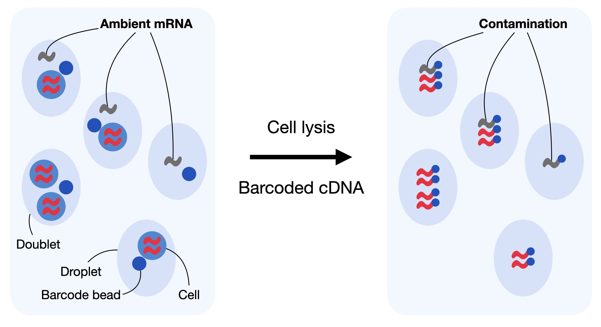
Overview
Every droplet-based single-cell library is contaminated with ambient RNA — cell-free transcripts that leak out of stressed or lysed cells into the suspension and get co-encapsulated with real cells. This “soup” is captured and sequenced alongside each cell’s native transcriptome.
Several approaches can be used:
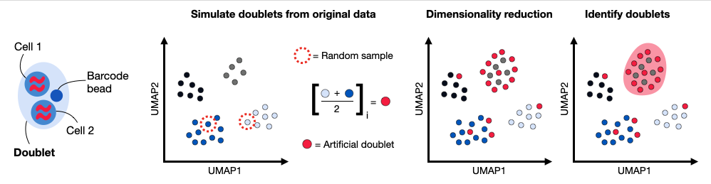
Description
Background
Normalization in scRNA-seq is harder than in bulk:
Why raw counts are not comparable?
Is X 10x higher in A? Not necessarily: maybe A was simply sequenced deeper.
Normalization removes this sequencing-depth effect so counts are comparable across cells.
Shifted logarithm
The first normalization technique we will use is the shifted logarithm which is based on the delta method. The delta method applies a nonlinear function \[ f(y) = \log \left(\frac{y}{s}+y_0\right) \] where \(y\) are raw counts, \(s\) is size factor, and \(y_0\) is pseudocount.
Size factors can be calculated by: \[ s_c = \frac{\sum_g y_{gc}}{L} \] where \(L\) describes target sum.
Scanpy default for \(L\) is median raw count depth in the dataset.
Shifted logarithm
Inspect:
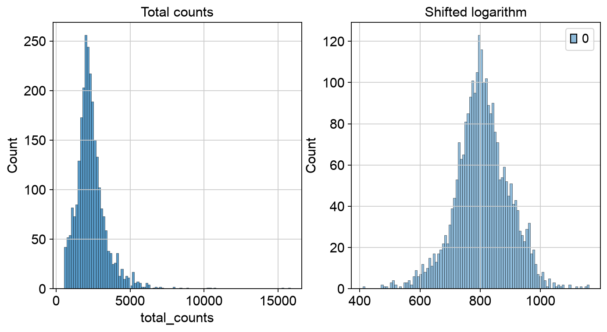
Pearson residuals
This normalization technique was motivated by the observation that cell-to-cell variation in scRNA-seq data might be confounded by biological heterogeneity with technical effects.
\[ r_i = \frac{y_i - \hat{\mu_i}}{\sqrt{V(\hat{\mu_i})}}, \] where \(y_i\) is the observed value, \(\hat{\mu_i}\) is the fitted mean, and \(V\) is the variance function.
The method utilizes Pearson residuals from ‘regularized negative binomial regression’ to calculate a model of technical noise in the data.
\[ z_{ij} = \frac{x_{ij}-\hat{\mu_i}}{\sqrt{\hat{\mu_i} + \hat{\mu_i}^2/\hat{\theta_i}}}, \] where \(V(\mu) = \mu + \mu^2/\theta\), and \(\hat{\mu_{ij}} = \exp(\beta_{0i} + \beta_{1i}\log_{10}m_j)\).
It explicitly adds the count depth as a covariate in a generalized linear model.
This method removed the impact of sampling effects while preserving cell heterogeneity in the dataset.
Pearson residuals
analytic_pearson = sc.experimental.pp.normalize_pearson_residuals(adata, inplace=False)
adata.layers["analytic_pearson_residuals"] = csr_matrix(analytic_pearson["X"])
fig, axes = plt.subplots(1, 2, figsize=(10, 5))
p1 = sns.histplot(adata.obs["total_counts"], bins=100, kde=False, ax=axes[0])
axes[0].set_title("Total counts")
p2 = sns.histplot(
adata.layers["analytic_pearson_residuals"].sum(1), bins=100, kde=False, ax=axes[1]
)
axes[1].set_title("Analytic Pearson residuals")
plt.show()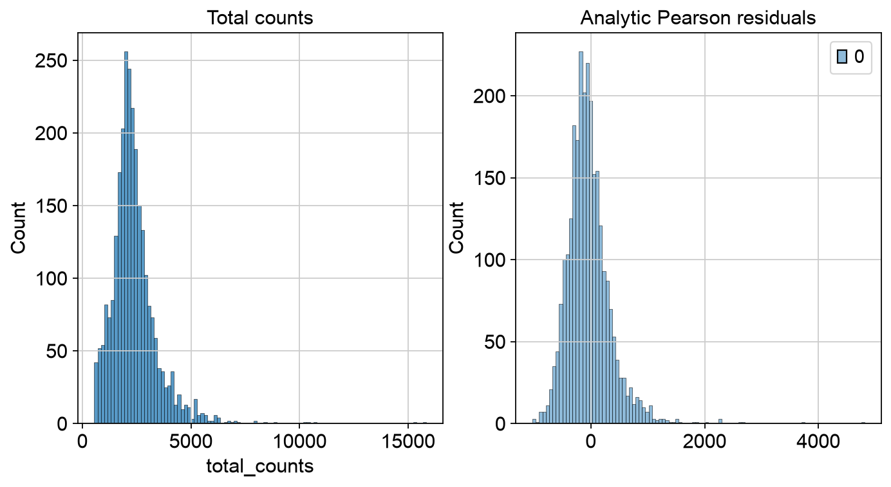
Overview
Most genes are noise (lowly expressed, or constant across cells). PCA/clustering on all genes is dominated by the noisiest, most highly expressed ones.
Solution: select highly variable genes (HVGs) - genes whose variance exceeds what mean expression predicts - and use only those (~1 000-3 000) downstream.
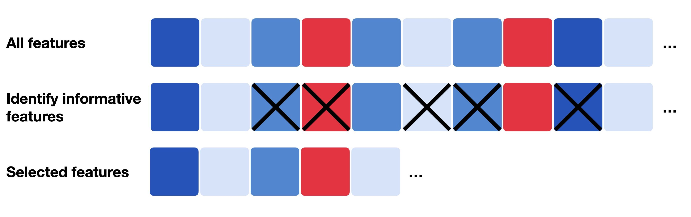
scanpy implementation
uv add scikit-miscView of AnnData object with n_obs × n_vars = 5 × 2000
obs: 'n_genes_by_counts', 'log1p_n_genes_by_counts', 'total_counts', 'log1p_total_counts', 'pct_counts_in_top_20_genes', 'total_counts_mt', 'log1p_total_counts_mt', 'pct_counts_mt', 'total_counts_ribo', 'log1p_total_counts_ribo', 'pct_counts_ribo', 'total_counts_hb', 'log1p_total_counts_hb', 'pct_counts_hb', 'n_genes'
var: 'gene_ids', 'mt', 'ribo', 'hb', 'n_cells_by_counts', 'mean_counts', 'log1p_mean_counts', 'pct_dropout_by_counts', 'total_counts', 'log1p_total_counts', 'n_cells', 'highly_variable', 'highly_variable_rank', 'means', 'variances', 'variances_norm'
uns: 'hvg'
layers: None (.X), 'log1p_norm', 'analytic_pearson_residuals'Flavors:
seurat_v3: bins genes by mean, computes dispersion within bins, picks top by standardized dispersionpearson_residuals: analytic residuals of a Poisson model - fast, robustDescription
Not all genes are informative and therefore not all genes are essential for tasks such as clustering. We already aimed to reduce the dimensionality of the data with feature selection. As a next step, we will further reduce the dimensions of single-cell RNA-seq data with dimensionality reduction algorithms. These algorithms are an important step during preprocessing to reduce the data complexity and for visualization.
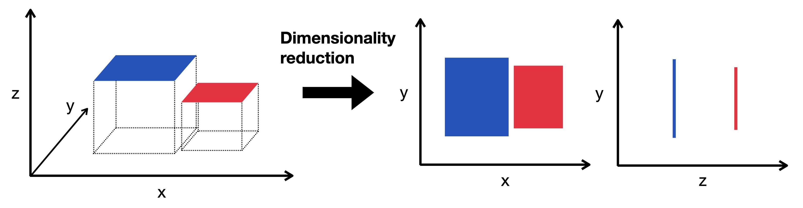
Linear dimensionality reduction
PCA finds orthogonal axes of maximal variance in the (scaled) HVG matrix:
\[X \approx U \Sigma V^T\]
The elbow
Plot explained variance ratio per PC: a sharp elbow separates signal PCs from noise PCs. Take PCs before the elbow (or use JackStraw / sc.tl.rank_genes_groups-style heuristics).
Rule of thumb
t-SNE
t-SNE is a graph based, non-linear dimensionality reduction technique which projects the high dimensional data onto 2D or 3D components.
The method defines a Gaussian probability distribution based on the high-dimensional Euclidean distances between data points. Subsequently, a Student t-distribution is used to recreate the probability distribution in a low dimensional space where the embeddings are optimized using gradient descent.
UMAP
A fundamental step for any advanced embedding and downstream calculations is the calculating of the neighborhood graph using the PCA representation of the data matrix. It is automatically used for other tools that require it such as the calculation of a UMAP.
We now use the calculating neighborhood graph to embed the cells with a UMAP.
UMAP interpretation
t-SNE and UMAP preserve which cells are neighbors, not the distances between cells that are far apart, so cluster sizes and distances between clusters carry little meaning. To see the effect of the initialization, we also compute UMAP from a random starting point.
Background
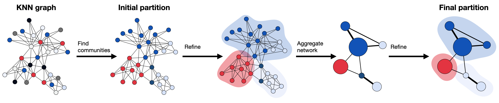
Leiden algorithm
From 10k points to groups
Cells of the same type have similar expression → close in PC space. Clustering groups them so we can:
Community detection on the graph
Resolution parameter
resolution → more, smaller clustersDescription
Cell type
A cell type is a cellular phenotype that is robust across datasets, identifiable by specific marker genes or proteins, and tied to a distinct biological function. A classic example is the plasma B cell — a white blood cell that secretes antibodies and can be identified by characteristic markers.
Manual annotation
this method is based on a single or small set of marker genes known to be associated with a particular cell type.
the data is usually clustered before annotation
either start from a table of marker genes, or check which genes are highly expressed in the clusters you defined
Marker genes
# keys: cell types or populations, values: lists of marker genes
marker_genes = {
"CD14+ Mono": ["FCN1", "CD14"],
"CD16+ Mono": ["TCF7L2", "FCGR3A", "LYN"],
"ID2-hi myeloid prog": [
"CD14",
"ID2",
"VCAN",
"S100A9",
"CLEC12A",
"KLF4",
"PLAUR",
],
"cDC1": ["CLEC9A", "CADM1"],
"cDC2": [
"CST3",
"COTL1",
"LYZ",
"DMXL2",
"CLEC10A",
"FCER1A",
], # Note: DMXL2 should be negative
"Normoblast": ["SLC4A1", "SLC25A37", "HBB", "HBA2", "HBA1", "TFRC"],
"Erythroblast": ["MKI67", "HBA1", "HBB"],
"Proerythroblast": [
"CDK6",
"SYNGR1",
"HBM",
"GYPA",
], # Note HBM and GYPA are negative markers
"NK": ["GNLY", "NKG7", "CD247", "GRIK4", "FCER1G", "TYROBP", "KLRG1", "FCGR3A"],
"ILC": ["ID2", "PLCG2", "GNLY", "SYNE1"],
"Lymph prog": [
"VPREB1",
"MME",
"EBF1",
"SSBP2",
"BACH2",
"CD79B",
"IGHM",
"PAX5",
"PRKCE",
"DNTT",
"IGLL1",
],
"Naive CD20+ B": ["MS4A1", "IL4R", "IGHD", "FCRL1", "IGHM"],
"B1 B": [
"MS4A1",
"SSPN",
"ITGB1",
"EPHA4",
"COL4A4",
"PRDM1",
"IRF4",
"CD38",
"XBP1",
"PAX5",
"BCL11A",
"BLK",
"IGHD",
"IGHM",
"ZNF215",
], # Note IGHD and IGHM are negative markers
"Transitional B": ["MME", "CD38", "CD24", "ACSM3", "MSI2"],
"Plasma cells": ["MZB1", "HSP90B1", "FNDC3B", "PRDM1", "IGKC", "JCHAIN"],
"Plasmablast": ["XBP1", "RF4", "PRDM1", "PAX5"], # Note PAX5 is a negative marker
"CD4+ T activated": ["CD4", "IL7R", "TRBC2", "ITGB1"],
"CD4+ T naive": ["CD4", "IL7R", "TRBC2", "CCR7"],
"CD8+ T": ["CD8A", "CD8B", "GZMK", "GZMA", "CCL5", "GZMB", "GZMH", "GZMA"],
"T activation": ["CD69", "CD38"], # CD69 much better marker!
"T naive": ["LEF1", "CCR7", "TCF7"],
"pDC": ["GZMB", "IL3RA", "COBLL1", "TCF4"],
"G/M prog": ["MPO", "BCL2", "KCNQ5", "CSF3R"],
"HSC": ["NRIP1", "MECOM", "PROM1", "NKAIN2", "CD34"],
"MK/E prog": [
"ZNF385D",
"ITGA2B",
"RYR3",
"PLCB1",
], # Note PLCB1 is a negative marker
}Subset to our data
{'CD14+ Mono': ['FCN1', 'CD14'],
'CD16+ Mono': ['TCF7L2', 'FCGR3A', 'LYN'],
'ID2-hi myeloid prog': ['CD14',
'ID2',
'VCAN',
'S100A9',
'CLEC12A',
'KLF4',
'PLAUR'],
'cDC1': ['CADM1'],
'cDC2': ['CST3', 'COTL1', 'LYZ', 'DMXL2', 'CLEC10A', 'FCER1A'],
'Normoblast': ['SLC25A37', 'HBA1', 'TFRC'],
'Erythroblast': ['MKI67', 'HBA1'],
'Proerythroblast': ['CDK6', 'SYNGR1'],
'NK': ['GNLY',
'NKG7',
'CD247',
'GRIK4',
'FCER1G',
'TYROBP',
'KLRG1',
'FCGR3A'],
'ILC': ['ID2', 'PLCG2', 'GNLY', 'SYNE1'],
'Lymph prog': ['VPREB1', 'EBF1', 'SSBP2', 'BACH2', 'CD79B', 'PAX5', 'PRKCE'],
'Naive CD20+ B': ['MS4A1', 'IL4R', 'FCRL1'],
'B1 B': ['MS4A1',
'SSPN',
'ITGB1',
'EPHA4',
'COL4A4',
'PRDM1',
'IRF4',
'CD38',
'XBP1',
'PAX5',
'BCL11A',
'BLK'],
'Transitional B': ['CD38', 'ACSM3', 'MSI2'],
'Plasma cells': ['MZB1', 'HSP90B1', 'FNDC3B', 'PRDM1'],
'Plasmablast': ['XBP1', 'PRDM1', 'PAX5'],
'CD4+ T activated': ['CD4', 'IL7R', 'ITGB1'],
'CD4+ T naive': ['CD4', 'IL7R', 'CCR7'],
'CD8+ T': ['CD8A', 'CD8B', 'GZMK', 'GZMA', 'CCL5', 'GZMB', 'GZMH', 'GZMA'],
'T activation': ['CD69', 'CD38'],
'T naive': ['LEF1', 'CCR7', 'TCF7'],
'pDC': ['GZMB', 'IL3RA', 'COBLL1', 'TCF4'],
'G/M prog': ['MPO', 'BCL2', 'KCNQ5', 'CSF3R'],
'HSC': ['NRIP1'],
'MK/E prog': ['ITGA2B', 'PLCB1']}Example for B cells
B_plasma_cts = [
"Naive CD20+ B",
"B1 B",
"Transitional B",
"Plasma cells",
"Plasmablast",
]
for ct in B_plasma_cts:
print(f"{ct.upper()}:") # print cell subtype name
sc.pl.umap(
adata,
color=marker_genes_in_data[ct],
vmin=0,
vmax="p99", # set vmax to the 99th percentile of the gene count instead of the maximum, to prevent outliers from making expression in other cells invisible. Note that this can cause problems for extremely lowly expressed genes.
sort_order=False, # do not plot highest expression on top, to not get a biased view of the mean expression among cells
frameon=False,
cmap="Reds", # or choose another color map e.g. from here: https://matplotlib.org/stable/tutorials/colors/colormaps.html
)
print("\n\n\n") # print white space for legibilityNAIVE CD20+ B: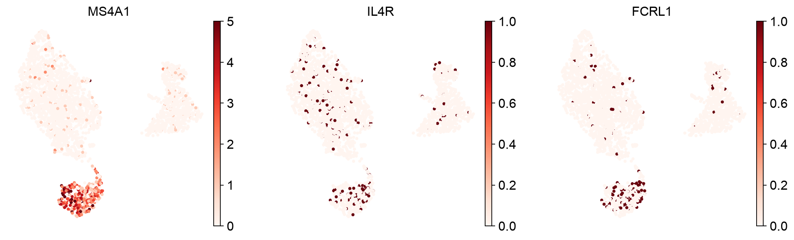
B1 B: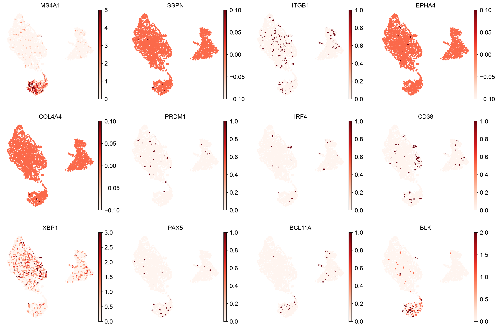
TRANSITIONAL B: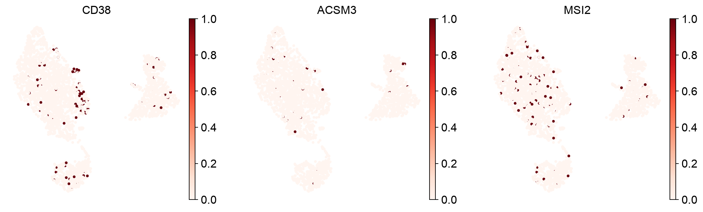
PLASMA CELLS: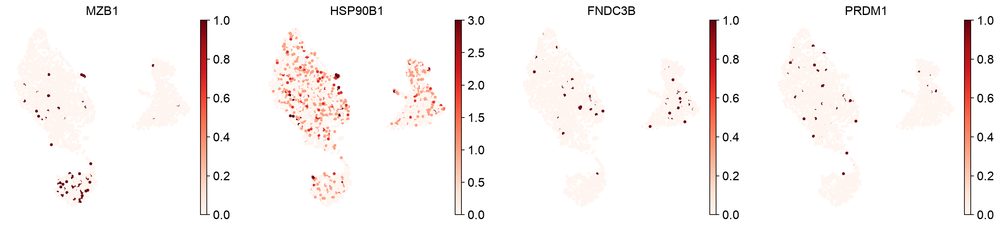
PLASMABLAST: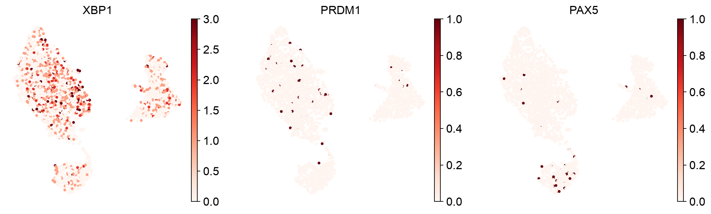
Visualization using dotplot
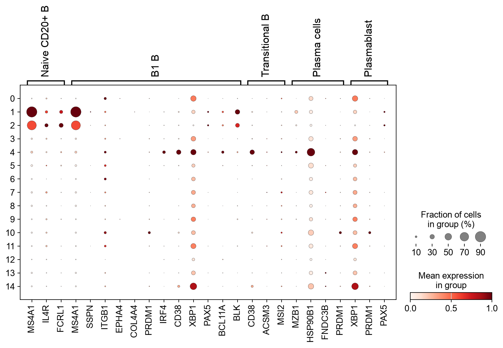